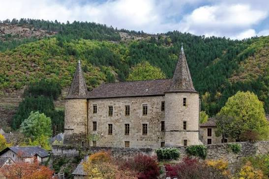
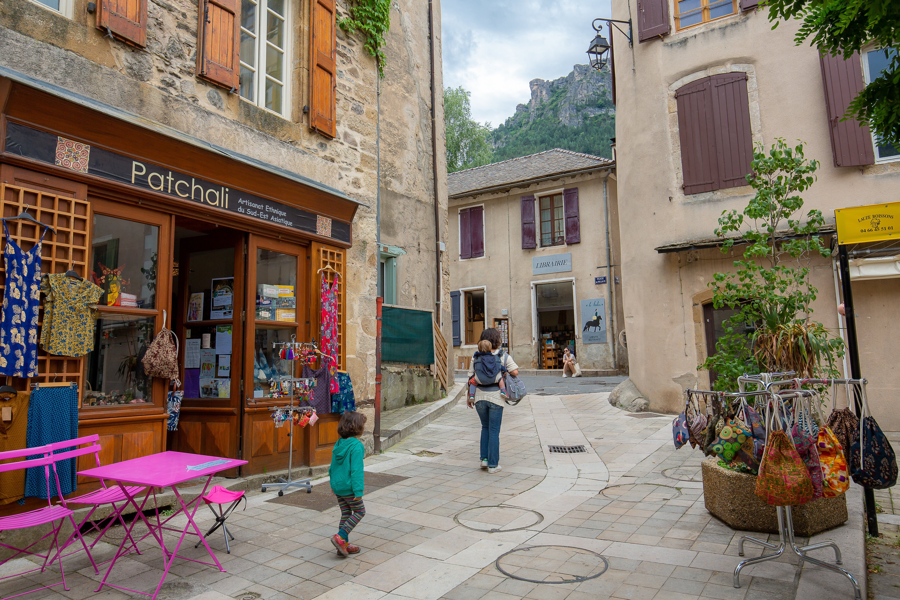

Nichée au carrefour de trois paysages géologiques remarquables, le schiste des Cévennes, le granit du mont Lozère et le calcaire des Causses, Florac doit son nom et sa vocation à l'eau : sources vives, résurgences et rivières s'y croisent au pied d'un relief spectaculaire. Dès le Moyen Âge, la ville est le centre d'une baronnie qui s'étend sur le Méjean et les Cévennes, dont le premier château, mentionné au XIIe siècle, aurait été bâti par Raymond d'Anduze, baron de Florac.

Le château de Florac, aujourd'hui siège du Parc national des Cévennes
Au XIVe siècle, la ville se dote d'une enceinte flanquée de douze tours et percée de deux portes, celle du Thérond au nord-ouest et celle du Pêcher au sud-est ; de nouvelles fortifications, englobant cette fois les faubourgs, sont édifiées dès 1622. Florac devient au XVIe siècle un bastion protestant, la majorité de la population cévenole adoptant les idées de la Réforme vers 1550 : l'Église protestante y est officiellement fondée en 1560, tandis que le temple actuel, troisième du genre, n'est inauguré qu'en 1833, la même année que la consécration de l'église catholique, scellant ainsi une paix durable entre les deux communautés.
Le château, reconstruit en 1652 après les guerres de Religion, connaît ensuite bien des vies : grenier à sel à la Révolution, vendu à l'État en 1810, il devient tour à tour prison puis hôpital, avant d'être restauré pour devenir, depuis la création du Parc national des Cévennes en 1970, le siège de son établissement public. Aujourd'hui unique sous-préfecture de la Lozère, Florac a fusionné en 2016 avec La Salle-Prunet pour former la commune de Florac Trois Rivières, portée par son riche patrimoine et son statut de capitale du parc.
🏞️
Visite pratique

Les quais du Vibron et la vieille ville de Florac
⏱️
Durée
Environ 1h30 à 2h de visite
📊
Difficulté
Facile, ville de plaine au bord du Tarnon
🚗
Accès
Cœur du Parc national des Cévennes, à 25 km de Mende
🎟️
Tarif
Ville en accès libre, Maison du Parc gratuite
✦ Infos pratiques
Château de Florac Siège du Parc national des Cévennes depuis 1970, expositions permanentes et Maison du Parc
Source du Pêcher Résurgence vauclusienne jaillissant au pied de la falaise, installée dans l'ancienne gare
Quartier du Vibron Canaux, jardins en terrasse et platanes centenaires témoignant de l'ingéniosité hydraulique locale
Musée du Causse et des Gorges du Tarn Collections consacrées aux traditions et à l'adaptation des habitants au territoire cévenol
Temple protestant Édifice de 1833, architecture sobre typique des temples cévenols
Chemin de Stevenson (GR70) Point de passage du célèbre itinéraire suivi par l'écrivain écossais en 1878
Ancienne gare et pont métallique Vestige de l'ère ferroviaire cévenole, pont de style Eiffel enjambant le Tarnon
Parc Paul Arnal Espace ombragé au bord de l'eau, idéal pour une pause en plein cœur de ville
1
Le château et la Maison du Parc national des Cévennes
Reconstruit en 1652 sur les fondations d'un château féodal du XIIe siècle, l'édifice abrite depuis 1970 le siège du Parc national et propose des expositions sur la faune, la flore et le patrimoine cévenol.
2
La source du Pêcher
Résurgence spectaculaire jaillissant au cœur même de la ville, installée à proximité de l'ancienne gare devenue office de tourisme.
3
Les quais du Vibron et le vieux quartier
Un dédale de ruelles, de maisons à encorbellement des XVIe-XVIIIe siècles et de jardins en terrasse irrigués par un ingénieux système de canaux.
4
Le départ du Chemin de Stevenson
Florac, ville porte du Parc national, marque une étape emblématique du GR70, sur les traces de l'écrivain Robert Louis Stevenson et de son âne Modestine.
5
L'ancienne gare et son pont métallique
Vestige du chemin de fer cévenol, ce pont de type Eiffel rappelle l'époque où le train désenclavait la région.
🏆
Reconnaissance & patrimoine
🌍
Causses et Cévennes, patrimoine mondial UNESCO
Le paysage culturel de l'agropastoralisme méditerranéen des Causses et des Cévennes est inscrit sur la liste du patrimoine mondial de l'UNESCO depuis 2011.
UNESCO 2011
🏞️
Capitale du Parc national des Cévennes
Créé en 1970 sur plus de 90 000 hectares, le Parc national des Cévennes a établi son siège administratif dans le château de Florac.
Depuis 1970
🌐
Réserve de biosphère
Le territoire du Parc national des Cévennes est reconnu réserve de biosphère par l'UNESCO, saluant la richesse de sa biodiversité et de son patrimoine culturel.
Réserve MAB UNESCO
🥾
Étape du chemin de Stevenson
Florac constitue une étape majeure du GR70, itinéraire de randonnée mondialement connu suivant les pas de l'écrivain écossais Robert Louis Stevenson.
GR70
🐴
Sur les pas de Stevenson, le chemin devenu légende
En 1878, l'écrivain écossais Robert Louis Stevenson traverse les Cévennes accompagné de sa fidèle ânesse Modestine, un périple de douze jours qu'il racontera dans son récit « Voyage avec un âne dans les Cévennes ». Florac, avec ses ruelles pittoresques et sa position au cœur du massif, occupe une place particulière sur cet itinéraire devenu depuis un sentier de grande randonnée mythique, le GR70, parcouru chaque année par des milliers de marcheurs venus du monde entier.
Il n'y a pas d'aventurier qui ne cherche à un moment ou un autre le vrai chemin de son cœur.
— Inspiré de l'esprit du voyage de Stevenson
Au-delà de la légende littéraire, Florac perpétue un autre savoir-faire ancestral : celui de la maîtrise de l'eau. Le quartier du Vibron, avec son réseau de canaux et ses jardins en terrasse, témoigne de l'ingéniosité déployée par les habitants pour irriguer cette région montagneuse et exigeante, un patrimoine hydraulique aujourd'hui préservé et mis en valeur au fil des promenades citadines.
💬
Le saviez-vous ? Anecdotes
🐴
Modestine, l'ânesse la plus célèbre des Cévennes
Le périple de Robert Louis Stevenson avec son ânesse récalcitrante a inspiré des générations de randonneurs et donné naissance au GR70, aujourd'hui parcouru chaque année par des milliers de marcheurs.
🏛️
Un château aux mille vies
Tour à tour résidence féodale, grenier à sel, prison puis hôpital, le château de Florac n'est devenu siège du Parc national des Cévennes qu'en 1970, après des siècles de reconversions successives.
🚂
Un pont Eiffel au cœur des Cévennes
L'ancienne gare de Florac et son pont métallique de style Eiffel rappellent l'épopée du chemin de fer cévenol, aujourd'hui reconverti pour l'accueil des visiteurs.
💧
Une ville à trois rivières
Le Tarnon, le Tarn et le Mimente se rencontrent près de Florac, une richesse hydrographique à l'origine du nom même de la commune fusionnée, Florac Trois Rivières.
📍
Aux alentours
Gorges du Tarn Immédiatement à l'est de Florac, l'un des plus beaux canyons de France, entre Sainte-Enimie et La Malène.
Cascade de Runes Chute d'eau de près de soixante mètres, une merveille naturelle nichée dans les Cévennes.
Mont Lozère Massif granitique culminant à plus de 1 700 m, entre landes et forêts de hêtres.
Cham des Bondons Site mégalithique parmi les plus importants d'Europe, à une trentaine de minutes.
Sainte-Enimie Autre village de caractère des Gorges du Tarn, ancien site de pèlerinage.
Meyrueis Porte d'entrée des Gorges de la Jonte et de l'Aven Armand, au sud du Causse Méjean.